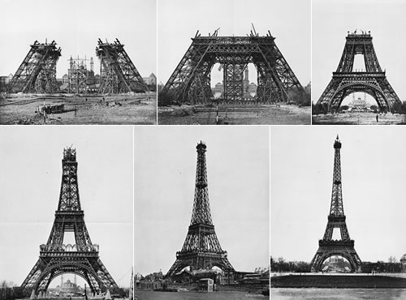
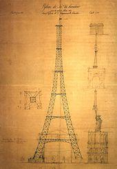

The Eiffel Tower started being constructed on 28th January 1887 and was finished being built on the 15th March 1889. Although the monument has only been finished on the 15th of March 1889, the tower was opened on th 31st of March 1889.
The Eiffel Tower was created by Stephen Sauvestre and Gustave Eiffel. Stephen was born on the 26th December 1847 in Bonnetable, France.
He has many noteable projects but the Eiffel Tower is the biggest one to this day. Although Stephen Sauvestre contributed to the design,
the design was originated by Maurice Koechlin an Emile Nouguier. Gustave Eiffel was born on 15th December 1832 and was best known for
the world-famous Eiffel Tower and his contribution to building the Statue of Liberty in New York.

Work on the foundations of the Eiffel Tower started around the 28th January 1887. Each leg created was restign on four 2m (6.6 ft) concrete slabs. The foundations were completed by the 30th June 1887 which is when the start of the iron building began. The very visable work on-site was complemented by the enormous amount of extracting preparatorynwork. The drawing office produced 1,700 general drawings and 3, 629 detailed drawings of the 18,038 different parts which were needed. Around halfway to the first level, construction was paused in order to construct a substantial timber scaffold. Due to this, concerns were starting to arise and even created headlines such as "Effiel Suicde!" and "Gustave Eiffle has gone mad: he has been confined in an Asylum". However, even with concerns the critical stage of joining the four legs together at the first level was completed by the end of March 1888. Construction of the Eiffel Tower involved 300 on-site employees and only one person died due to Effiel's stringent safety precautions.
The Eiffel Tower is 324 metres (1,063 ft) tall which is around the same height as an 81-storey buliding. Since the tower is tall, it needs a large strong base whcih is sqaure and 125 meters (410 ft) on a side. Although the tower is 324 meters tall, there is 3 floors for visitors. The Eiffel tower also has resturants on the first and second floor and there are 9 lifts/elevators. The structure of the Eiffel Tower weighs 7,300 tonnes due to the puddled iron while the entire structure includes non-metal components is approximately 10,000 tonnes. If the 7,300 tonnes of the metal structure were melted down, it would fill the 125-metre-square base to a depth of only 6.25cm (2.5in) assuming the density of the metal to be 7.8 tonnes per cubic metre. The arrangement of the lifts has been changed several times during the course of the tower's history.  The normal service of the lift takes an average of 8 minutes and 50 seconds to do the round trip, spending an average of 1 minute and 15 seconds at each floor which means the average journey between floors is just 1 minute.